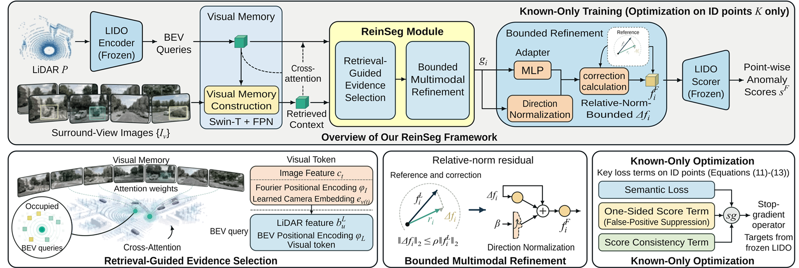

ReinSeg: Retrieval-Guided Bounded Multimodal Refinement for 3-D Road Anomaly Segmentation
Let LiDAR points look up camera context, and cap how far that context can move them.


- 3D anomaly segmentation
- Cross-modal retrieval
- Bounded refinement
arXivPDF
BibTeX
@misc{zhang2026reinseg,
title = {{ReinSeg}: Retrieval-Guided Bounded Multimodal Refinement for {3-D} Road Anomaly Segmentation},
author = {Haifa Zhang and Yijing Wang and Zhiqiang Zuo},
year = {2026},
eprint = {2611.02648},
archivePrefix = {arXiv},
primaryClass = {cs.CV},
url = {https://arxiv.org/abs/2611.02648}
}Method & experimental details
- The problem
- Road hazards are rare and sparsely observed in LiDAR, so a point-wise anomaly detector has to rank them ahead of abundant normal structure. Surround-view images carry semantic context that LiDAR lacks, but camera input can be missing, corrupted, or misaligned.
- The approach
- Occupied LiDAR BEV cells retrieve context from a shared memory of eight surround-view images, with no calibration variables given to the retrieval module. A relative-norm-bounded residual returns that context to the LiDAR point features. The frozen LIDO anomaly scorer is kept, and training uses in-distribution semantic labels only.
- Key result
- On STU validation, ReinSeg raises AP from 27.54% to 35.67% over LIDO and lowers FPR95 from 34.85% to 10.61%. Both are evaluated on the identical point support with the official STU evaluator. ReinSeg runs at 21.8 FPS at batch size one on an RTX 4090. Result source